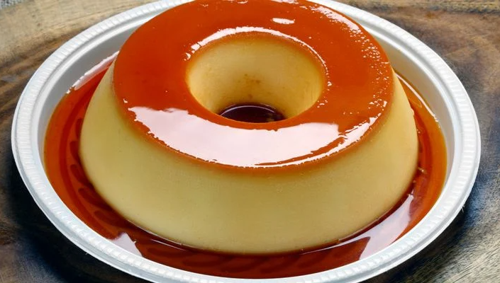

Pão de Queijo Recipe

The best dessert in Brazil!
To surprise the family, you can bet on the super different flavor of dulce de leche pudding or tapioca pudding . For those who like speed and practicality in the kitchen , fridge pudding and microwave pudding are great versions of the classic recipe.
Ingredients:
- 1 can of condensed milk
- 1 can of milk ( measurement of the can of condensed milk )
- 3 whole eggs
- 1 cup (tea) of sugar
- 1/2 cup of water
Preparation:
Pudding:
- First, beat the eggs well in the blender.
- Add condensed milk and milk, and beat again.
Syrup:
- Melt the sugar in the pan until it turns brown , add the water and let it thicken.
- Put it in a round shape and pour the pudding dough on top.
- Bake in a medium oven for 45 minutes , with the round roast inside a larger one with water .
- Poke a fork to see if it's cooked through.
- Let cool and unmold.
There you have it! Enjoy your delicious meal!
Why not cook the other recipes we have?
Go back